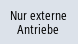

Zur Anzeige bestimmter Freigaben und Zustände von Maschinenachsen können Sie eine Auswahl aus allen verfügbaren Achsen und Antriebe in einer beliebigen Reihenfolge im Fenster "Erweiterte Auswahl" zusammenstellen.
|
Hinweis
|
|
Folgende Auswahlkonfigurationen sind vorab definiert und können nicht geändert oder gelöscht werden:
|
Auswahlübersicht
Folgende Informationen finden Sie in der Auswahlübersicht:
Spalte | Beschreibung |
|---|
Bus-Nr. | Busnummer für Antriebe ohne NC-Zuordnung. Kein Eintrag bei NC-Achsen. |
Slave-Adr. | Slaveadresse für Antriebe ohne NC-Zuordnung. Kein Eintrag bei NC-Achsen. |
Geräte-Nr. | Gerätenummer für Antriebe ohne NC-Zuordnung. Kein Eintrag bei NC-Achsen. |
Antriebsobj.-Nr. | Antriebsobjektnummer für Antriebe ohne NC-Zuordnung. Kein Eintrag bei NC-Achsen. |
Name/Bezeichner | Enthält bei NC-Achsen den Standard-Maschinenachsbezeichner und den anwenderdefinierten Maschinenachsnamen. Enthält bei Antrieben ohne NC-Zuordnung den Antriebsobjektnamen. |
Zuordnung | Bei interner Objektzuordnung wird NC angezeigt. Bei externer Objektzuordnung wird PLC angezeigt. |
| Hinweis |
Die Auswahlübersicht unterscheidet sich in der Informationsangabe zu Slave-Adr. und Geräte-Nr. zwischen PROFIBUS- und PROFINET-Konfiguration. |
Vorgehensweise
 | 1. | Wählen Sie den Bedienbereich "Diagnose" an. |
  | 2. | Drücken Sie die Menüfortschalt-Taste und den Softkey "Achsdiag.". Das Fenster "Service Übersicht" wird geöffnet. |
| | 3. | Drücken Sie den Softkey "Erweiterte Auswahl". Das Fenster "Erweiterte Auswahl: Achsen und Antriebe" wird geöffnet. |
| | 4. | Drücken Sie den Softkey "Neue Auswahl". Der Dialog "Neue Auswahl" wird geöffnet. |
| | 5. | Geben Sie in den Eingabefeldern einen Anzeige- und einen Dateinamen ein. |
 | 6. | Bestätigen Sie die Eingabe mit dem Softkey "OK". Das Fenster "Auswahl bearbeiten" wird für die neu angelegte Auswahl geöffnet. |
| | 7. | Setzen Sie für die Achsen und Antriebe, die Sie anzeigen lassen möchten, Haken in die Kontrollkästchen. |
| | | - ODER - |
| | | Drücken Sie einen der folgenden Softkeys um eine bestimmte Auswahl zu erhalten: |
| | | Alle Achsen/Antriebe werden ausgewählt. |
| | | Keine Achse/Antrieb wird ausgewählt. |
| | | Es werden nur interne Antriebe ausgewählt. |
|  | | Es werden nur externe Antriebe ausgewählt. |
| | | Es werden die Achsen ausgewählt, denen ein realer Antrieb zugeordnet ist. |
| | | Es werden alle Achsen ausgewählt, die in mindestens einem Kanal definiert sind. |
| | 8. | Drücken Sie den Softkey "OK", um die Auswahl zu bestätigen. |
| | 9. | Drücken Sie den Softkey "Auswahl löschen", um die aktuelle Auswahl zu löschen. |
| | 10. | Drücken Sie den Softkey "Auswahl bearbeiten", um die aktuelle Auswahl zu bearbeiten. Das Fenster "Auswahl bearbeiten" wird geöffnet. |
 | 11. | Drücken Sie den Softkey "Zurück", gelangen Sie in das Grundbild "Service Übersicht". |